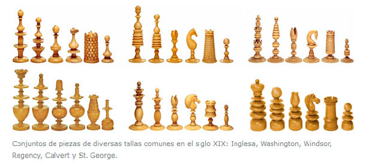

Ajedrez
Historia
En la historia del ajedrez el origen del juego sigue siendo controvertido, pero la versión más aceptada es que el ajedrez fue inventado en Asia, probablemente en la India, con el nombre de chaturanga y desde allí se extendió a China, Rusia, Persia y Europa, donde se estableció la normativa vigente.

Mision
Mostrando prácticamente a los aprendices los diferentes horizontes lúdicos que posee el ajedrez para conseguir, de manera realista.
Visión
la equidad práctica del juego. Para que tengan los jugadores la misma posibilidad de ganar sin un bagaje teórico especializado de aperturas generadas por la posición inicial clásica.
¿Por qué es bueno jugar al ajedrez?
Puede aumentar el coeficiente intelectual.
Todos los derechos reservados por Carlos